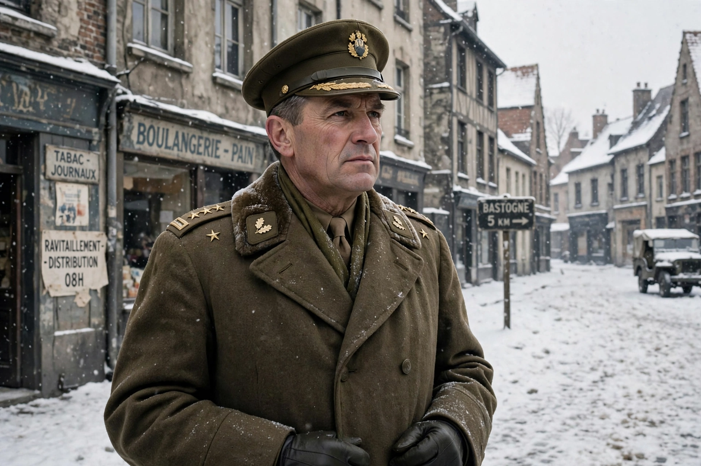

 | |
| Born | 2 July 1898, Washington, D.C., United States |
|---|---|
| Died | 11 August 1975 (aged 77), Chevy Chase, Maryland |
| Allegiance | United States |
| Service | United States Army (1918–1956) |
| Rank | General |
| Commands | 101st Airborne Division (acting); Seventh Army; U.S. Army Europe |
| Battles | Second World War — Normandy, Operation Market Garden, Battle of the Bulge |
Anthony Clement McAuliffe (2 July 1898 – 11 August 1975) was a United States Army general who is best remembered for commanding the 101st Airborne Division during the siege of Bastogne in December 1944, where his one-word reply to a German surrender demand — "NUTS!" — became famous.
McAuliffe graduated from West Point in the accelerated class of November 1918 and was commissioned in the field artillery. Between the wars he served in a variety of staff and artillery posts. In the Second World War he became artillery commander of the 101st Airborne Division, parachuting into Normandy on D-Day and taking part in Operation Market Garden in the Netherlands.
When the Germans launched the Ardennes offensive in December 1944, the division commander, Maxwell Taylor, was in Washington, and McAuliffe, as acting commander, directed the defence of the road junction of Bastogne, Belgium. Surrounded by superior German forces, on 22 December 1944 he received an ultimatum demanding surrender. McAuliffe's written reply consisted of a single word: "NUTS!" — an expression of defiance that baffled the German emissaries and delighted his troops. Bastogne held until relieved by elements of George Patton's Third Army on 26 December.
McAuliffe subsequently commanded the 103rd Infantry Division and, after the war, held senior posts including command of the Seventh Army and Commander-in-Chief of U.S. Army Europe (1955–1956), retiring with the rank of general. He later worked in the chemical industry and died in 1975; he is buried in Arlington National Cemetery.